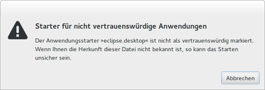

.desktop-Dateien
Dieser Artikel wurde für die folgenden Ubuntu-Versionen getestet:
Dieser Artikel ist größtenteils für alle Ubuntu-Versionen gültig.
Zum Verständnis dieses Artikels sind folgende Seiten hilfreich:
 Manche Desktop-Umgebungen der verschiedenen Ubuntu-Varianten bringen einen Menüeditor mit, der es gestattet, Menüeinträge komfortabel zu bearbeiten. Jedoch kann es je nach Situation hilfreich sein, die zu Grunde liegenden Programmstarter (Textdateien mit der Endung .desktop) von Hand zu bearbeiten oder neue zu erstellen. Auch viele Dateimanager wie z.B. Nautilus nutzen diese Starter. Programmstarter werden darüber hinaus zum automatischen Start von Anwendungen nach der grafischen Anmeldung und für Symbole auf dem Desktop verwendet. Zu den Details siehe Autostart und Desktop-Symbole.
Manche Desktop-Umgebungen der verschiedenen Ubuntu-Varianten bringen einen Menüeditor mit, der es gestattet, Menüeinträge komfortabel zu bearbeiten. Jedoch kann es je nach Situation hilfreich sein, die zu Grunde liegenden Programmstarter (Textdateien mit der Endung .desktop) von Hand zu bearbeiten oder neue zu erstellen. Auch viele Dateimanager wie z.B. Nautilus nutzen diese Starter. Programmstarter werden darüber hinaus zum automatischen Start von Anwendungen nach der grafischen Anmeldung und für Symbole auf dem Desktop verwendet. Zu den Details siehe Autostart und Desktop-Symbole.
Dieser Artikel behandelt die manuelle Erstellung von .desktop-Dateien. Neben allgemeinen Einstellungen werden Besonderheiten der jeweiligen Desktop-Umgebung bzw. des Fenstermanagers aufgeführt. Prinzipiell können diese Dateien auch eine Internet-Adresse (URL) enthalten und damit als Lesezeichen (Bookmark) dienen, was hier aber nicht weiter behandelt wird.
Programmstarter erstellen¶
Für einen Eintrag in das Menü muss man eine Datei nach folgendem Muster erstellen: Beispielname.desktop. Benutzerspezifische Dateien werden im Ordner ~/.local/share/applications (im Homeverzeichnis) abgespeichert. Sollen die Einstellungen systemweit gelten, so erstellt man diese Datei unter /usr/share/applications. Im Gegensatz zur ersten Variante werden dann jedoch Root-Rechte [1] benötigt. Außerdem gilt eine bestimmte Reihenfolge: benutzerdefinierte .desktop-Dateien überstimmen – bei gleichem Dateinamen – die systemweiten Vorgaben.
Allgemeine Voraussetzungen sind:
eine geeignete Symboldatei (Icon) und
das installierte Programm bzw. die Kenntnis der konkreten Programmdatei
Ein praktisches Beispiel: zum Menüeintrag des Browsers Chromium gehört die Programmdatei chromium-browser. Meistens sind Name und Programmdatei identisch, aber leider nicht immer. Im folgenden Beispiel wird ein Eintrag im Menü mit dem Namen "LinDVD" für das Untermenü "Multimedia" erstellt. Einen Texteditor [2] öffnen und folgenden Text kopieren und einfügen:
[Desktop Entry] Name=LinDVD GenericName=Video Player GenericName[de]=Videos mit LinDVD abspielen Comment=DVD-Player Exec=lindvd Icon=/usr/share/pixmaps/LinDVD.xpm Terminal=false Type=Application StartupNotify=false Categories=AudioVideo;Player; OnlyShowIn=GNOME;XFCE; MimeType=video/mpeg;audio/mpeg;
Die Datei nun im Ordner ~/.local/share/applications unter einem aussagekräftigen Namen wie z.B. lindvd.desktop abspeichern. Der neue Eintrag erscheint als "LinDVD" sofort im Menü.
Starter auf dem Desktop¶
Möchte man einen Programmstarter auf dem Desktop anlegen, so muss die erstellte Datei (zusätzlich) im eigenen Homeverzeichnis im Ordner ~/Schreibtisch oder ~/Arbeitsfläche/ (früher auch ~/Desktop/) abgespeichert werden. Außerdem müssen gegebenenfalls noch Starter auf dem Desktop generell aktiviert werden. Dies wird im Artikel Desktop-Symbole genauer erklärt.

Starter ausführbar machen¶
Je nach Desktop-Umgebung und Ubuntu-Version kann es erforderlich sein, Programmstarter ausführbar [3] zu machen. Ein Beispiel bzw. eine Fehlermeldung, die bei der Nutzung unter Unity oder GNOME auftauchen kann, ist in nebenstehender Abbildung zu sehen. Unter Xubuntu tritt dieses Verhalten erst ab der Xfce-Version 4.10 bzw. ab 12.10 auf, bei Lubuntu ab 14.10.
Hinweis:
Zum Hintergrund dieser Sicherheitsmaßnahme siehe How to write a Linux virus in 5 easy steps  .
.
Wenn man zusätzlich noch eine Shebang-Zeile wie die folgende einfügt, kann man die Datei auch in einem Terminal direkt ausführen:
1 | #!/usr/bin/xdg-open
|
Siehe auch xdg-open und Shebang für Shellskripte.
Achtung!
Aus Sicherheitsgründen (s.o.) sollte diese Variante nur in begründeten Ausnahmefällen zum Einsatz kommen.
Programmstarter entfernen¶
Um einen Programmstarter zu entfernen, bieten sich zwei Möglichkeiten an:
Man fügt eine Zeile
NoDisplay=true
in die .desktop-Datei ein (siehe nächster Abschnitt) oder
man löscht die betreffende .desktop-Datei
Elemente eines Programmstarters¶
Nachfolgend eine kurze Übersicht zur Bedeutung der einzelnen Elemente eines Programmstarters. Für genauere Informationen zum Thema sei die offizielle Dokumentation empfohlen, hier insbesondere Desktop Menu Specification Standard Keys .
| Programmstarter | ||
| Element | Beschreibung | Erforderlich |
Type= | Beim Erstellen eines Programmstarters wählt man als Typ Application. | ja |
Name=NAME | Der Name der Verknüpfung innerhalb des Menüs. | ja |
Exec=BEFEHL | Ausführungsbefehl für das Programm (mit dem es in einem Terminalfenster gestartet werden kann, z.B. firefox). | ja |
Icon=SYMBOLDATEI | Symbol (Piktogramm), welches im Menü angezeigt werden soll (Icon Themes) . | optional |
Comment=KOMMENTAR | Ein kurzer beschreibender Satz, welcher mit dem Feld Name und GenericName nicht identisch sein darf. | optional |
Categories=KATEGORIEN | Die Angaben hier entscheiden, in welchem Untermenü die Anwendung angezeigt werden soll. Alle verfügbaren Kategorien kann man hier einsehen. Mehrere Angaben sind möglich. Beispiele: OpenOffice.org/LibreOffice: Application;Office;WordProcessor;ScummVM: Game;AdventureGame;Pidgin: Network;InstantMessaging;Gxine: GTK;Player;TV;Xfburn: X-XFCE;TK;DiscBurning;Archiving;Utility; | optional |
Path=PFAD/ZUR/ANWENDUNG | Für Typ Application kann hier ein Arbeitsverzeichnis angegeben werden. | optional |
Keywords=SCHLAGWÖRTER | Liste von Stichwörtern, die z.B. von Suchfunktionen benutzt werden können. | optional |
TryExec=BEFEHL | Anhand dieser Zeile wird überprüft, ob das Programm, für das ein Menüeintrag angezeigt werden soll, installiert ist. Entweder der komplette Pfad zur ausführbaren Datei oder nur ihr Name (dann wird versucht, ihn über die $PATH-Variable aufzulösen). | optional |
Terminal=FALSE | Wahrheitswert. Auswahl, ob das Programm in einem Terminalfenster läuft. true für ja, false für nein. | optional |
GenericName=... | Allgemeine Beschreibung des Programms, z.B. Web Browser. | optional |
NoDisplay=WAHRHEITSWERT | Dieser Eintrag bedeutet, dass die Anwendung zwar existiert, aber nicht im Menü angezeigt werden soll. Dies kann hilfreich sein, wenn man zum Beispiel einen Starter erstellt, um bestimmte Dateien vom Dateimanager oder einer anderen Anwendung heraus zu starten, diese Anwendung aber nie alleine startet. | optional |
OnlyShowIn=DESKTOP_ENVIRONMENT | Eintrag wird nur im Menü der festgelegten Desktop-Umgebung (siehe Registered Environments ) angezeigt (Groß-/Kleinschreibung beachten!). Kombinationen sind möglich. In dem angegebenen Link ist die Bezeichnung für Cinnamon falsch. Korrekt muss es heißen: X-Cinnamon. | optional |
NotShowIn=DESKTOP_ENVIRONMENT | Eintrag wird nicht im Menü der festgelegten Desktop-Umgebung angezeigt (Groß-/Kleinschreibung beachten!). Bei Verwendung im Zusammenhang mit Autostart wird der automatische Start deaktiviert. | optional |
MimeType=... | Um den korrekten MIME-Typ anzugeben, muss man zuerst in Erfahrung bringen, welche Dateitypen vom Programm unterstützt werden. Diese Informationen sind im Wiki oder auf der Internetseite des Programms / Projekts zu finden. Hat man diese Informationen, so öffnet man mit einem Editor die Datei /etc/mime.types. Anhand der Dateiendungen z.B. mp3 und mpg erhält man die benötigten Informationen für das Programm LinDVD: audio/mpeg; video/mpeg;. Diese werden dann in der Datei eingetragen. (shared-mime-info-spec) | optional |
StartupNotify=WAHRHEITSWERT | Soll der Programmstart über ein spezielles Mauszeigersymbol angezeigt werden? In der Regel wird die Option false für Einträge von Programmen ins Menü genutzt, da dieser Mechanismus nicht von jeder Desktop-Umgebung unterstützt wird. Weitere Informationen . | optional |
StartupWMClass=... | Verwendung einer speziellen "WMClass". Wichtig z.B. für Java-Apps in Kombination mit Unity oder Docky. | optional |
Lokalisierung¶
Es besteht auch die Möglichkeit, eine .desktop-Datei zu lokalisieren, damit – je nach verwendeter Systemsprache – der Name und die Beschreibung in der jeweiligen Sprache erscheint. Dafür setzt man hinter dem Namen des zu lokalisierendem Elements in Klammern den Ländercode und danach folgend die Übersetzung. Für das Element GenericName sähe das beispielsweise folgendermaßen aus:
GenericName=Music Player GenericName[de]=Musik Player GenericName[fi]=Musiikkisoitin GenericName[pl]=Odtwarzacz Muzyki GenericName[se]=Musikspelare
.desktop-Dateien unterstützen aber auch eine noch feiner abgestufte Lokalisierung. Die Locale-Bezeichnungen haben üblicherweise das Format lang_COUNTRY@MODIFIER. Sprache und REGION werden durch zweistellige ISO-639- bzw. ISO-3166-Codes repräsentiert (z.B. de_DE für Deutsch/Deutschland oder de_AT für Deutsch/Österreich). Der "modifier" ist dafür vorgesehen, kategoriespezifische Varianten zu wählen, z.B. eine Währung, ein Datumsformat oder eine Sortierreihenfolge. In der Praxis wird heutzutage ein "modifier" nicht mehr verwendet.
Die folgende Tabelle gibt einen Überblick, nach welcher Reihenfolge die einzelnen Lokalisierungen genutzt werden:
| Lokalisierung | ||
| LC_MESSAGES Wert | Beispiel | Reihenfolge möglicher Werte |
| Sprache_REGION@MODIFIER | "de_DE@euro" | Sprache_REGION@MODIFIER, Sprache_REGION, Sprache@MODIFIER, Sprache, Standardwert |
| Sprache_REGION | "de_DE" | Sprache_REGION, Sprache@MODIFIER, Sprache, Standardwert |
| Sprache@MODIFIER | "de@euro" | Sprache@MODIFIER, lang, Standardwert |
| Sprache | "de" | Sprache, Standardwert |
Dadurch ist es möglich, auch unterschiedliche Richtungen einer Sprache zu berücksichtigen, wie am folgenden Beispiel gezeigt:
GenericName=January GenericName[de]=Januar GenericName[de_de]=Januar GenericName[de_at]=Jänner
Für einen Programmstarter sähe eine Lokalisierung am Beispiel des Programms Tomahawk beispielsweise folgendermaßen aus:
[Desktop Entry] Type=Application Version=1.0 Name=Tomahawk GenericName=Music Player GenericName[de]=Musik Player GenericName[fi]=Musiikkisoitin GenericName[pl]=Odtwarzacz Muzyki GenericName[se]=Musikspelare TryExec=tomahawk Exec=tomahawk %u Comment=Tomahawk — Social Music Player Comment[fi]=Tomahawk – sosiaalinen musiikkisoitin Comment[pl]=Tomahawk – Społecznościowy Odtwarzacz Muzyki Comment[se]=Tomahawk — Den Sociala Musikspelaren Icon=tomahawk Terminal=false Categories=Qt;AudioVideo;Audio;Player; MimeType=x-scheme-handler/tomahawk;x-scheme-handler/spotify;
Quicklists¶
Die vertikale Unity-Launchbar im linken Bildschirmrand bietet zu jedem Programmstarter noch ein Kontextmenü via Rechtsklick  , Quicklist genannt, mit weiteren Aktionsmöglichkeiten an. Bei dieser Quicklist handelt es sich um eine spezielle Erweiterung einer .desktop-Datei, die im Artikel Quicklists ausführlich behandelt wird.
, Quicklist genannt, mit weiteren Aktionsmöglichkeiten an. Bei dieser Quicklist handelt es sich um eine spezielle Erweiterung einer .desktop-Datei, die im Artikel Quicklists ausführlich behandelt wird.
Weitere Beispiele¶
Weitere Beispiele können mittels eines Editors [2] in /usr/share/applications eingesehen und für eigene Einträge verwendet bzw. überarbeitet werden.
Achtung!
Bitte immer mit Kopien arbeiten, falls man mit den Originaldateien experimentiert. Die Originaldatei nur überschreiben, wenn man sich der Konsequenzen bewusst ist. Außerdem sollte man bedenken, dass geänderte Originaldateien bei einem Update wieder überschrieben werden.
Natives Programm¶
Am Beispiel von ScummVM:
[Desktop Entry] Name=ScummVM Comment[de]=Sammlung von Interpretern für einige Adventure-Game-Engines Exec=scummvm Icon=/usr/share/pixmaps/scummvm-logo.png Terminal=false Type=Application Categories=Application;Game;AdventureGame; StartupNotify=false
Shell-Skript¶
Obwohl auch der TV-Browser auf Java (siehe unten) basiert, dient das Programm hier als Beispiel für einen Programmstart über ein Shell-Skript:
[Desktop Entry] Name=TV-Browser Comment[de]=digitale TV-Zeitschrift Exec=/usr/lib/tvbrowser/tvbrowser.sh Icon=/usr/share/pixmaps/tvbrowser128.png Terminal=false Type=Application Categories=AudioVideo; StartupNotify=false
Java-Programm¶
Ein Beispiel für einen Java-Programmstarter (siehe Geotag). Benutzername, Pfade und Dateinamen sind noch anzupassen:
[Desktop Entry] Name=Geotag Comment[de]=GPS-Daten in Bilder anzeigen und setzen Exec=java -jar /home/BENUTZERNAME/bin/geotag.jar Icon=/home/BENUTZERNAME/Bilder/geotag.png Terminal=false Type=Application Categories=Graphics; StartupNotify=false
Speziell beim Einsatz des Dateimanagers Nautilus (Unity, GNOME 3) muss zusätzlich eine weitere .desktop-Datei für Java-Programme erstellt werden. Die Abschnitte Dateimanager-Kontextmenü und Java weiter unten und diese Diskussion im Forum bieten Lösungsvorschläge.
Problembehebung¶
Pfadangaben¶
Bei der Angabe von relativen Pfaden für Programme, Skripte oder Symbole im eigenen Homeverzeichnis kommt es häufiger zu Problemen – Abkürzungen wie ~ oder $HOME sind nicht gestattet. Dem kann man aus dem Weg gehen, wenn man stattdessen absolute Pfade verwendet.
Optionen übergeben¶
Beim Aufruf eines Programms über die Zeile Exec=... ist die Übergabe von Optionen mit zwei Bindestrichen in der Form PROGRAMM --OPTION nicht möglich, während PROGRAMM -OPTION bzw. ein Bindestrich kein Problem ist. Falls zwei Bindestriche erforderlich sind, bedient man sich des folgenden Konstrukts:
Exec=sh -c "PROGRAMM --OPTION"
Zwei oder mehr Programme starten¶
Eine anderer Variante ist die Verwendung für zwei oder mehr Befehle/Programme. Entweder um diese parallel auszuführen:
Exec=sh -c "foo & bar"
Mit dem & wird bar also direkt nach foo gestartet und beide Programme laufen gleichzeitig.
Oder um diese sequentiell auszuführen:
Exec=sh -c "foo && bar"
Exec=sh -c "foo ; bar"
In diesen Fall wird bar erst gestartet, nachdem foo beendet wurde. Der feine Unterschied zwischen diesen beiden Aufrufen ist, dass der Befehl nach && nur ausgeführt wird, wenn das Programm davor keinen Fehlercode zurückliefert, während das mit ; keine Rolle spielt. Beim zweiten Aufruf wird bar bspw. auch ausgeführt, wenn foo gar nicht vorhanden ist.
Kommandozeilenprogramme¶
Kommandozeilenprogramme werden innerhalb eines Terminals, hier am Beispiel einer SSH-Sitzung, aufgerufen. Für TERMINAL ist das jeweils gewünschte Terminalprogramm einzusetzen:
Exec=sh -c "TERMINAL -x ssh spy@nsa.usa.gov"
Dateimanager-Kontextmenü¶
Welche Programme bei einem Rechtsklick auf eine Datei bei "Öffnen mit...", beispielsweise von Nautilus (siehe auch nächster Abschnitt), automatisch vorgeschlagen werden, hängt vom MIME-Typ der Datei ab. Um beispielsweise den eigenen Lieblings-VideoPlayer in dieser Liste zu ergänzen, öffnet man die dazugehörige .desktop-Datei und kontrolliert die entsprechende Zeile für den MIME-Typ. Beispiel:
MimeType=audio/*;video/*;
sorgt dafür, dass das jeweilige Wunschprogramm für alle Audio- und Videodateien vorgeschlagen wird.
Sollte das Programm immernoch nicht im Auswahlmenü erscheinen, muss dem Befehl hinter 'Exec=...' noch das Kürzel %f angehängt werden, welches für eine zu erwartende Datei steht.
Auf dem gleichen Weg kann man auch andere Programme aus der Liste entfernen. Dazu wird empfohlen, die jeweilige .desktop-Datei zuerst von /usr/share/applications/ nach ~/.local/share/applications/ zu kopieren. Hintergrund: Einträge dort überstimmen die Angaben aus /usr/share/applications/ und – noch wichtiger – werden beim Einspielen von Updates nicht überschrieben.
Java¶
Falls ein Programmstarter für Java fehlt (oder mehrere, wenn man verschiedene Java-Versionen installiert hat), kann das Öffnen einer .jar-Datei über einen Dateimanager schwierig werden. Ein Beispiel für eine entsprechende .desktop-Datei (hier für OpenJDK 7 64-Bit):
[Desktop Entry] Name=OpenJDK 7 Runtime Name[de]=OpenJDK 7 Laufzeitumgebung Comment=open with OpenJDK Java Comment[de]=mit OpenJDK Java öffnen Exec=/usr/lib/jvm/java-7-openjdk-amd64/bin/java -jar %f Terminal=false Type=Application Icon=openjdk-7 MimeType=application/x-java-archive;application/java-archive;application/x-jar; NoDisplay=false
Für Oracle Java passt man diese Datei entsprechend an.
Links¶
Intern¶
Arronax - grafische Oberfläche, um .desktop-Dateien zu bearbeiten
Menüeditor - Grafische Menüeditoren
.directory-Dateien - neues Untermenü erstellen
Desktop
 Übersichtsartikel
Übersichtsartikel
Extern¶
Specifications
auf Freedesktop.orgAnatomy of a .desktop File
- Blogbeitrag, 04/2010developer.gnome.org
 - Desktop-Dateien und ihre Anwendung innerhalb der Desktop-Menüs
- Desktop-Dateien und ihre Anwendung innerhalb der Desktop-Menüs
- Erstellt mit Inyoka
-
 2004 – 2017 ubuntuusers.de • Einige Rechte vorbehalten
2004 – 2017 ubuntuusers.de • Einige Rechte vorbehalten
Lizenz • Kontakt • Datenschutz • Impressum • Serverstatus -
Serverhousing gespendet von